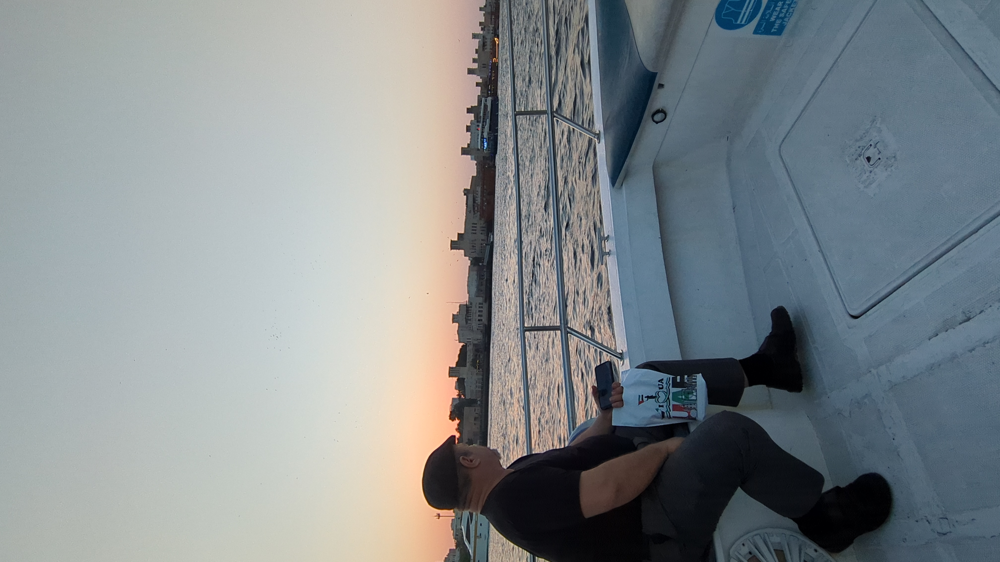

Après la lumière
Tu es entrée
par une fêlure
que je prenais pour un mur.
Depuis,
ma peau garde l’empreinte
d’un feu sans flamme.
Sous mes côtes,
une serrure rouillée
tourne dans le noir.
Je croyais mes fièvres
rendues à la cendre.
Ton silence
les a réveillées.
Mon corps,
depuis,
sait des choses
que ma mémoire ignore.
Puis tu pars.
Rien ne tombe —
seulement la lumière
change de propriétaire.
Je reste
avec cette chaleur
qui ne trouve plus ta peau.
La nuit me traverse
comme une chambre
sans porte.
Et mon ombre,
au matin,
me regarde
comme un étranger.
Djamel Metref
At Yenni le 6 septembre 2026 
← Tous les poèmes
Après la lumière
Amour et désir · Absence et manque